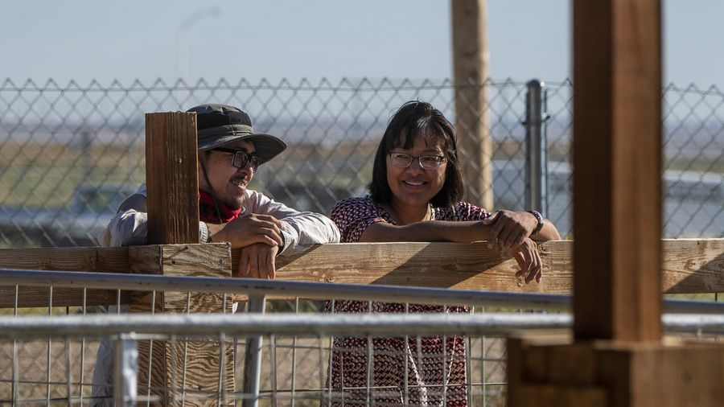

コロンビア人自転車選手テハダ、血液パスポートの異常で暫定出場停止にColombiaanse wielrenner Tejada voorlopig geschorst wegens afwijking bloedpaspoortコロンビア人自転車選手ハロルド・テハダは、血液パスポートの異常により暫定出場停止となった。「説明のつかない異常が確認された」…
コロンビア人自転車選手テハダ、血液パスポートの異常で暫定出場停止にColombiaanse wielrenner Tejada voorlopig geschorst wegens afwijking bloedpaspoortコロンビア人自転車選手ハロルド・テハダは、血液パスポートの異常により暫定出場停止となった。「説明のつかない異常が確認された」… ファン・フェーン、プレイヤーズ・チャンピオンシップ・ファイナルズ1回戦で敗退 オランダ勢7人が勝ち上がりVan Veen uitgeschakeld in eerste ronde Players Championship Finals, zeven Nederlanders doorジャン・ファン・フェーンは先週末の素晴らしい活躍を良い形で続けることができなかった。24歳のダーツ選手は金曜日、プレイヤーズ・チャンピオンシップ・ファイナルズの1回戦で敗れた
ファン・フェーン、プレイヤーズ・チャンピオンシップ・ファイナルズ1回戦で敗退 オランダ勢7人が勝ち上がりVan Veen uitgeschakeld in eerste ronde Players Championship Finals, zeven Nederlanders doorジャン・ファン・フェーンは先週末の素晴らしい活躍を良い形で続けることができなかった。24歳のダーツ選手は金曜日、プレイヤーズ・チャンピオンシップ・ファイナルズの1回戦で敗れた ポーランド、ロシアのドローンとミサイルをより早く撃墜できるようにしたい：「待ってはいられない」Polen wil sneller Russische drones en raketten kunnen neerhalen: 'We kunnen niet wachten'なんと3発ものロシアのミサイルが1週間前、ポーランド南東部に落下した。しかもそれは、国際メディアが…に招待された日だった。
ポーランド、ロシアのドローンとミサイルをより早く撃墜できるようにしたい：「待ってはいられない」Polen wil sneller Russische drones en raketten kunnen neerhalen: 'We kunnen niet wachten'なんと3発ものロシアのミサイルが1週間前、ポーランド南東部に落下した。しかもそれは、国際メディアが…に招待された日だった。 首位ヘラクレス、ヨング・アヤックスとの壮絶な試合でエールステ・ディヴィジで痛手Koploper Heracles loopt averij op in eerste divisie bij spectaculair duel met Jong Ajaxヘラクレス・アルメロはエールステ・ディヴィジで4連勝の後、2ポイントを落とした。ヨング・アヤックスとのアウェーでの壮絶な試合は4…となった
首位ヘラクレス、ヨング・アヤックスとの壮絶な試合でエールステ・ディヴィジで痛手Koploper Heracles loopt averij op in eerste divisie bij spectaculair duel met Jong Ajaxヘラクレス・アルメロはエールステ・ディヴィジで4連勝の後、2ポイントを落とした。ヨング・アヤックスとのアウェーでの壮絶な試合は4…となった バスケットボール代表、イスラエルにホームで惜敗しW杯予選グループ最下位にBasketballers laatste in WK-kwalificatiegroep na nipte thuisnederlaag tegen Israëlオランダのバスケットボール代表はデン・ハーグでイスラエルに84対90で敗れた。ヨハン・ロイヤッカース監督率いるチームはこれにより最下位に転落した
バスケットボール代表、イスラエルにホームで惜敗しW杯予選グループ最下位にBasketballers laatste in WK-kwalificatiegroep na nipte thuisnederlaag tegen Israëlオランダのバスケットボール代表はデン・ハーグでイスラエルに84対90で敗れた。ヨハン・ロイヤッカース監督率いるチームはこれにより最下位に転落した ウィレムII、フローニンゲン戦で勝利を逃しエールディヴィジの不名誉な記録を更新Willem II geeft zege weg tegen Groningen en breekt negatief eredivisierecordウィレムIIは終盤の失点により今季初勝利を逃した。FCフローニンゲンへのアウェー戦は1対1となった。ティルブルフのチームにとっては…
ウィレムII、フローニンゲン戦で勝利を逃しエールディヴィジの不名誉な記録を更新Willem II geeft zege weg tegen Groningen en breekt negatief eredivisierecordウィレムIIは終盤の失点により今季初勝利を逃した。FCフローニンゲンへのアウェー戦は1対1となった。ティルブルフのチームにとっては… セルビア学生リスト、化学教授を大統領候補に擁立Servische Studentenlijst schuift scheikundehoogleraar naar voren als presidentskandidaatセルビアの化学教授がセルビア大統領になるためのレースに参加している。10月に議会選挙で勝利した政党、学生リストは、
セルビア学生リスト、化学教授を大統領候補に擁立Servische Studentenlijst schuift scheikundehoogleraar naar voren als presidentskandidaatセルビアの化学教授がセルビア大統領になるためのレースに参加している。10月に議会選挙で勝利した政党、学生リストは、 ヒトラーに扮して公の場に現れるオランダ人、ドイツで有罪判決Nederlander die als Hitler in het openbaar verschijnt veroordeeld in Duitslandオランダ人のネオナチ、ステファン・ワイカンプは、定期的にアドルフ・ヒトラーに扮して公の場に現れており、ドイツで執行猶予付きの禁錮刑を言い渡された。
ヒトラーに扮して公の場に現れるオランダ人、ドイツで有罪判決Nederlander die als Hitler in het openbaar verschijnt veroordeeld in Duitslandオランダ人のネオナチ、ステファン・ワイカンプは、定期的にアドルフ・ヒトラーに扮して公の場に現れており、ドイツで執行猶予付きの禁錮刑を言い渡された。 騒動の後、マルグラーテンが黒人解放者を再び顕彰：「今度は墓地そのもので」Na commotie eert Margraten zwarte bevrijders opnieuw: 'Nu nog op begraafplaats zelf'マルグラーテンではきょう、第二次世界大戦でオランダを解放した黒人のアメリカ軍兵士のための新しい情報パネルが除幕された。そのパネルは…
騒動の後、マルグラーテンが黒人解放者を再び顕彰：「今度は墓地そのもので」Na commotie eert Margraten zwarte bevrijders opnieuw: 'Nu nog op begraafplaats zelf'マルグラーテンではきょう、第二次世界大戦でオランダを解放した黒人のアメリカ軍兵士のための新しい情報パネルが除幕された。そのパネルは… 動画｜ウクライナの子どもたち、数年ぶりに家族と再会Video | Oekraïense kinderen zien na jaren hun familie terug
動画｜ウクライナの子どもたち、数年ぶりに家族と再会Video | Oekraïense kinderen zien na jaren hun familie terug イラン戦争が10カ月目に入り、和平の見通しはないIranoorlog gaat tiende maand in en uitzicht op vrede ontbreekt約1カ月続くはずだったイランに対する米イスラエル戦争は、10カ月目に入った。交渉は完全に行き詰まっている。ワシントンは…
イラン戦争が10カ月目に入り、和平の見通しはないIranoorlog gaat tiende maand in en uitzicht op vrede ontbreekt約1カ月続くはずだったイランに対する米イスラエル戦争は、10カ月目に入った。交渉は完全に行き詰まっている。ワシントンは… 動画｜消防隊がドレンテの運河で凍りついたガチョウ2羽を救助Video | Brandweer redt twee vastgevroren ganzen uit Drents kanaal
動画｜消防隊がドレンテの運河で凍りついたガチョウ2羽を救助Video | Brandweer redt twee vastgevroren ganzen uit Drents kanaal 内閣、批判にもかかわらず青少年ケアの自己負担案をやはり提出Kabinet komt ondanks kritiek toch met plan voor eigen bijdrage in de jeugdzorg内閣の意向通りなら、一部の親は今後、青少年ケアの自己負担をやはり支払うことになる。ミリャム・ステルク大臣は金曜日、法案の草案を…
内閣、批判にもかかわらず青少年ケアの自己負担案をやはり提出Kabinet komt ondanks kritiek toch met plan voor eigen bijdrage in de jeugdzorg内閣の意向通りなら、一部の親は今後、青少年ケアの自己負担をやはり支払うことになる。ミリャム・ステルク大臣は金曜日、法案の草案を… 空虚な約束から高騰する家賃まで：住宅危機がスペインの選挙を支配Van loze beloftes tot torenhoge huren: woningcrisis domineert Spaanse verkiezingen政府はこの問題をめぐって崩壊し、選挙キャンペーンにおける最も重要なテーマの一つとなっているのは、スペインの都市における住宅危機だ。特に若者たちは…
空虚な約束から高騰する家賃まで：住宅危機がスペインの選挙を支配Van loze beloftes tot torenhoge huren: woningcrisis domineert Spaanse verkiezingen政府はこの問題をめぐって崩壊し、選挙キャンペーンにおける最も重要なテーマの一つとなっているのは、スペインの都市における住宅危機だ。特に若者たちは… レッドブル代表、フェルスタッペンの新契約が巻き返しに不可欠だったと語るRed Bull-baas zegt dat nieuw contract Verstappen cruciaal was voor ommekeerチーム代表のローラン・メキース氏によれば、マックス・フェルスタッペンはレッドブルの復活に決定的な役割を果たした。チームが苦戦していたまさにその時、
レッドブル代表、フェルスタッペンの新契約が巻き返しに不可欠だったと語るRed Bull-baas zegt dat nieuw contract Verstappen cruciaal was voor ommekeerチーム代表のローラン・メキース氏によれば、マックス・フェルスタッペンはレッドブルの復活に決定的な役割を果たした。チームが苦戦していたまさにその時、 子ども向けシリーズの声優ヤン・アンネ・ドレント氏（85）が死去Stemacteur van kinderseries Jan Anne Drenth (85) overleden俳優のヤン・アンネ・ドレント氏は金曜、85歳で死去した。ドレント氏は有名なテレビシリーズに出演し、人気の子ども向けシリーズに声を当てた。
子ども向けシリーズの声優ヤン・アンネ・ドレント氏（85）が死去Stemacteur van kinderseries Jan Anne Drenth (85) overleden俳優のヤン・アンネ・ドレント氏は金曜、85歳で死去した。ドレント氏は有名なテレビシリーズに出演し、人気の子ども向けシリーズに声を当てた。 数日間燃え続けるサイロ火災で爆発の危険、ドラハテンで会社が避難Explosiegevaar door al dagen woedende silobrand in Drachten, bedrijf ontruimdフリースラント州ドラハテンでは、サイロで数日間にわたり火災が続いている。まだ火災を制御できていないため、安全当局は予防措置として
数日間燃え続けるサイロ火災で爆発の危険、ドラハテンで会社が避難Explosiegevaar door al dagen woedende silobrand in Drachten, bedrijf ontruimdフリースラント州ドラハテンでは、サイロで数日間にわたり火災が続いている。まだ火災を制御できていないため、安全当局は予防措置として ユトレヒトのモハメド（19歳）との感情的な別れ：「彼はみんなを助けたが、誰が彼を助けたのか」Emotioneel afscheid van Utrechtse Mohammed (19): 'Hij hielp iedereen, maar wie hielp hem?'ユトレヒトのオマル・アル・ファルーク・モスクで、家族、友人、知人たちが今日、モハメドの死を悼んだ。モハメドは今週死亡した19歳の男性で…
ユトレヒトのモハメド（19歳）との感情的な別れ：「彼はみんなを助けたが、誰が彼を助けたのか」Emotioneel afscheid van Utrechtse Mohammed (19): 'Hij hielp iedereen, maar wie hielp hem?'ユトレヒトのオマル・アル・ファルーク・モスクで、家族、友人、知人たちが今日、モハメドの死を悼んだ。モハメドは今週死亡した19歳の男性で… ジョー・バイデン氏の回顧録、売れ行きは期待外れ 初週はわずか2万1000部Verkoop memoires Joe Biden valt vies tegen: slechts 21.000 exemplaren in eerste weekジョー・バイデン氏（84歳）の回顧録『Promise Me, America』は、初週に2万1000部売れた。11月17日に発売された同書で、元大統領は…
ジョー・バイデン氏の回顧録、売れ行きは期待外れ 初週はわずか2万1000部Verkoop memoires Joe Biden valt vies tegen: slechts 21.000 exemplaren in eerste weekジョー・バイデン氏（84歳）の回顧録『Promise Me, America』は、初週に2万1000部売れた。11月17日に発売された同書で、元大統領は… フェルスタッペンとレッドブル、カタールでは今のところ力不足 メルセデスが圧倒Verstappen en Red Bull komen vooralsnog tekort in Qatar, Mercedes oppermachtigマックス・フェルスタッペンはカタールでの最初のフリー走行で6位と5位に終わった。オランダ人ドライバーはレッドブルで、メルセデスにまだ近づけなかった。
フェルスタッペンとレッドブル、カタールでは今のところ力不足 メルセデスが圧倒Verstappen en Red Bull komen vooralsnog tekort in Qatar, Mercedes oppermachtigマックス・フェルスタッペンはカタールでの最初のフリー走行で6位と5位に終わった。オランダ人ドライバーはレッドブルで、メルセデスにまだ近づけなかった。 逃亡中の殺人容疑者、スリランカでゾウに衝突し逮捕されるVluchtende moordverdachte botst op olifant in Sri Lanka en wordt opgepaktスリランカ人の殺人容疑者が金曜日、スクーターで逃走中にゾウに衝突した後、逮捕された。49歳の男は
逃亡中の殺人容疑者、スリランカでゾウに衝突し逮捕されるVluchtende moordverdachte botst op olifant in Sri Lanka en wordt opgepaktスリランカ人の殺人容疑者が金曜日、スクーターで逃走中にゾウに衝突した後、逮捕された。49歳の男は デル・グロッソ、「壮大な」オストラヴァでスリップの末ニスに屈する、シュライバーが雪辱Del Grosso buigt na slippertje voor Nys in 'episch' Ostrava, revanche Schreiberティボル・デル・グロッソは、フィールドへの復帰を勝利で飾ることはあと一歩でできなかった。ワールドサーキットの壮観な開幕戦で、オランダの
デル・グロッソ、「壮大な」オストラヴァでスリップの末ニスに屈する、シュライバーが雪辱Del Grosso buigt na slippertje voor Nys in 'episch' Ostrava, revanche Schreiberティボル・デル・グロッソは、フィールドへの復帰を勝利で飾ることはあと一歩でできなかった。ワールドサーキットの壮観な開幕戦で、オランダの ル・ペンの影が、失敗に終わった欧州予算協議に垂れ込むSchaduw van Le Pen hangt boven mislukte Europese begrotingsgesprekkenEUの新たな多年次予算をめぐる最新の交渉ラウンドも今週、成果なく終わった。舞台裏では、今年中にという目標は…との声が聞かれる
ル・ペンの影が、失敗に終わった欧州予算協議に垂れ込むSchaduw van Le Pen hangt boven mislukte Europese begrotingsgesprekkenEUの新たな多年次予算をめぐる最新の交渉ラウンドも今週、成果なく終わった。舞台裏では、今年中にという目標は…との声が聞かれる ポッドキャスト『De Stemming』：庭用ホース、衝撃クッション、そして沈黙するブマPodcast De Stemming: De Tuinslang, een stootkussen en stille BumaVVDではしばらく不穏な動きがあったが、今では本当に大きく荒れているようだ。複数のVVD関係者が、党首イェ…氏の座を公然と脅かしている
ポッドキャスト『De Stemming』：庭用ホース、衝撃クッション、そして沈黙するブマPodcast De Stemming: De Tuinslang, een stootkussen en stille BumaVVDではしばらく不穏な動きがあったが、今では本当に大きく荒れているようだ。複数のVVD関係者が、党首イェ…氏の座を公然と脅かしている カナリア諸島の島へ向かう移民の船で死者と負傷者Doden en gewonden op migrantenboot onderweg naar Canarisch eiland救助隊員らは、カナリア諸島のエル・イエロ島の沖合60キロ余りの船上で、少なくとも8人の死亡者と重体状態の移民6人を
カナリア諸島の島へ向かう移民の船で死者と負傷者Doden en gewonden op migrantenboot onderweg naar Canarisch eiland救助隊員らは、カナリア諸島のエル・イエロ島の沖合60キロ余りの船上で、少なくとも8人の死亡者と重体状態の移民6人を 財団がOdidoを提訴：被害者1人当たり少なくとも500ユーロの補償を要求Stichting sleept Odido voor rechter: eist zeker 500 euro compensatie per gedupeerdeCUIC財団は、50万人以上を代表してOdidoを提訴した。同団体は、その通信会社が今年2月に被害に遭ったとして損害賠償を求めている…
財団がOdidoを提訴：被害者1人当たり少なくとも500ユーロの補償を要求Stichting sleept Odido voor rechter: eist zeker 500 euro compensatie per gedupeerdeCUIC財団は、50万人以上を代表してOdidoを提訴した。同団体は、その通信会社が今年2月に被害に遭ったとして損害賠償を求めている… 財団、データ漏洩をめぐりOdidoを裁判に訴え、損害賠償を要求Stichting sleept Odido voor rechter vanwege datalek en eist schadevergoedingCUIC財団は今年初めの大規模なデータ漏洩をめぐり、500,000人以上を代表して通信会社Odidoに対する召喚状を提出した。同財団は
財団、データ漏洩をめぐりOdidoを裁判に訴え、損害賠償を要求Stichting sleept Odido voor rechter vanwege datalek en eist schadevergoedingCUIC財団は今年初めの大規模なデータ漏洩をめぐり、500,000人以上を代表して通信会社Odidoに対する召喚状を提出した。同財団は 「アメリカ式の選挙戦」を経て、深く分断されたスペインが投票へTot op het bot verdeeld Spanje naar de stembus na 'Amerikaanse verkiezingsrace'スペインは、今後4年間の国の進路を定める議会選挙を翌日に控えている。選択肢は二つある：続行することドイツでホテルの部屋の鍵を忘れた男性、裸で警察を訪ねるMan vergeet sleutel van hotelkamer in Duitsland en klopt naakt aan bij politieドイツでは、木曜日から金曜日にかけての夜、男性が裸で警察署を訪ねた。彼は鍵を持たずに、自分の車のために外に出ていた
「アメリカ式の選挙戦」を経て、深く分断されたスペインが投票へTot op het bot verdeeld Spanje naar de stembus na 'Amerikaanse verkiezingsrace'スペインは、今後4年間の国の進路を定める議会選挙を翌日に控えている。選択肢は二つある：続行することドイツでホテルの部屋の鍵を忘れた男性、裸で警察を訪ねるMan vergeet sleutel van hotelkamer in Duitsland en klopt naakt aan bij politieドイツでは、木曜日から金曜日にかけての夜、男性が裸で警察署を訪ねた。彼は鍵を持たずに、自分の車のために外に出ていた 解説｜遠い親戚がDNAを通じて犯人を暴く仕組み：「大きなブレークスルー」Explainer | Hoe een verre neef via DNA een dader kan verraden: 'Enorme doorbraak'
解説｜遠い親戚がDNAを通じて犯人を暴く仕組み：「大きなブレークスルー」Explainer | Hoe een verre neef via DNA een dader kan verraden: 'Enorme doorbraak' バックストリート・ボーイズ、来年夏にアレーナでのコンサートで「back again」Backstreet Boys volgend jaar zomer 'back again' voor concert in Arena「Oh my God, we're back again」という歌詞が、来年アムステルダムのヨハン・クライフ・アレーナに響くことになりそうだ。5年ぶりにアメリカのボーイバンド、バックストリー…
バックストリート・ボーイズ、来年夏にアレーナでのコンサートで「back again」Backstreet Boys volgend jaar zomer 'back again' voor concert in Arena「Oh my God, we're back again」という歌詞が、来年アムステルダムのヨハン・クライフ・アレーナに響くことになりそうだ。5年ぶりにアメリカのボーイバンド、バックストリー… ポッドキャスト『De Dag』：スペイン首相の九つの命Podcast De Dag: de negen levens van de Spaanse premier今度の日曜日、スペインで投票が行われる。スペインの社会党のペドロ・サンチェス首相が政権を維持するのか、それともスペインは右へ舵を切るのか。世論調査は
ポッドキャスト『De Dag』：スペイン首相の九つの命Podcast De Dag: de negen levens van de Spaanse premier今度の日曜日、スペインで投票が行われる。スペインの社会党のペドロ・サンチェス首相が政権を維持するのか、それともスペインは右へ舵を切るのか。世論調査は ベルギー人、5日後に誘拐犯から逃亡、自分の墓を掘らされるBelg ontsnapt na vijf dagen aan ontvoerders, moest eigen graf gravenベルギー人男性は今月、5日後に誘拐犯のもとから逃げ出した。彼は激しい暴行を受け、自分の墓を掘らなければならなかった。誘拐はおそらく…
ベルギー人、5日後に誘拐犯から逃亡、自分の墓を掘らされるBelg ontsnapt na vijf dagen aan ontvoerders, moest eigen graf gravenベルギー人男性は今月、5日後に誘拐犯のもとから逃げ出した。彼は激しい暴行を受け、自分の墓を掘らなければならなかった。誘拐はおそらく… オランダ、新たな歩兵大隊のために装甲車両を追加調達Nederland schaft extra pantservoertuigen aan voor nieuw infanteriebataljonヨーロッパの同盟国4カ国との共同合意により、オランダは装甲車両をさらに数十両取得する。いわゆるCV90車
オランダ、新たな歩兵大隊のために装甲車両を追加調達Nederland schaft extra pantservoertuigen aan voor nieuw infanteriebataljonヨーロッパの同盟国4カ国との共同合意により、オランダは装甲車両をさらに数十両取得する。いわゆるCV90車 チャンピオンズリーグ優勝を果たした成功監督スレーヘルス氏、アーセナルが解任Succestrainer Slegers ontslagen door Arsenal, waar ze de Champions League mee wonロンドンのクラブによると、ヘッドコーチのルネー・スレーヘルス氏とアーセナルは「双方の合意により」袂を分かった。37歳の監督は同クラブでタイトルを獲得した実績がある。
チャンピオンズリーグ優勝を果たした成功監督スレーヘルス氏、アーセナルが解任Succestrainer Slegers ontslagen door Arsenal, waar ze de Champions League mee wonロンドンのクラブによると、ヘッドコーチのルネー・スレーヘルス氏とアーセナルは「双方の合意により」袂を分かった。37歳の監督は同クラブでタイトルを獲得した実績がある。 ハウテンで刺殺された女性（34）の元パートナーに殺人の疑いEx-partner van doodgestoken vrouw (34) uit Houten wordt verdacht van moordハウテンで34歳の元パートナーが死亡した事件に関連して水曜日に逮捕された、ユトレヒト出身の39歳の男性は、殺人または故殺の疑いがかけられている。
ハウテンで刺殺された女性（34）の元パートナーに殺人の疑いEx-partner van doodgestoken vrouw (34) uit Houten wordt verdacht van moordハウテンで34歳の元パートナーが死亡した事件に関連して水曜日に逮捕された、ユトレヒト出身の39歳の男性は、殺人または故殺の疑いがかけられている。 ホウテンで元妻を刺殺した男、殺人容疑で引き続き勾留Man die zijn ex-vrouw doodstak in Houten verdacht van moord, blijft langer vastzittenホウテンで元妻を刺殺した疑いが持たれている39歳の男は、さらに2週間勾留される。予審判事が決定した
ホウテンで元妻を刺殺した男、殺人容疑で引き続き勾留Man die zijn ex-vrouw doodstak in Houten verdacht van moord, blijft langer vastzittenホウテンで元妻を刺殺した疑いが持たれている39歳の男は、さらに2週間勾留される。予審判事が決定した スイス人、オオカミを犬として登録しペットとして飼育Zwitser houdt wolf als huisdier door hem te registreren als hondスイスで、ペットとして飼われていたオオカミが押収された。その動物は違法に国内に密輸され、犬として登録されていた。
スイス人、オオカミを犬として登録しペットとして飼育Zwitser houdt wolf als huisdier door hem te registreren als hondスイスで、ペットとして飼われていたオオカミが押収された。その動物は違法に国内に密輸され、犬として登録されていた。 イエッテン首相、G20サミットでトランプ大統領とASMLについて協議を希望Premier Jetten wil tijdens G20-top overleg met Trump over ASMLロブ・イエッテン首相は来月、マイアミで開かれるG20サミットでドナルド・トランプ大統領と、輸出の可能性を…米国の法案について話し合いたいと考えている
イエッテン首相、G20サミットでトランプ大統領とASMLについて協議を希望Premier Jetten wil tijdens G20-top overleg met Trump over ASMLロブ・イエッテン首相は来月、マイアミで開かれるG20サミットでドナルド・トランプ大統領と、輸出の可能性を…米国の法案について話し合いたいと考えている ホテルのキーカードを忘れた男性、裸でドイツ警察を訪ねるMan vergeet sleutelkaart van hotel en klopt naakt aan bij Duitse politieリューベックのドイツ警察は昨夜、あまりにも薄着の観光客に驚かされた。下半身に買い物袋だけをまとった男性が
ホテルのキーカードを忘れた男性、裸でドイツ警察を訪ねるMan vergeet sleutelkaart van hotel en klopt naakt aan bij Duitse politieリューベックのドイツ警察は昨夜、あまりにも薄着の観光客に驚かされた。下半身に買い物袋だけをまとった男性が フェイエノールト、アヤックスとのクラシケルに向け明るい材料を探る：「プレーが自信を与えてくれる」Feyenoord zoekt lichtpunten voor Klassieker tegen Ajax: 'Spel geeft vertrouwen'フェイエノールトはエールディビジで5位に後退したが、チャンピオンズリーグのFCポルト戦でのプレーは、緊張感のあるアヤックスとの一戦に向けた見通しをもたらした
フェイエノールト、アヤックスとのクラシケルに向け明るい材料を探る：「プレーが自信を与えてくれる」Feyenoord zoekt lichtpunten voor Klassieker tegen Ajax: 'Spel geeft vertrouwen'フェイエノールトはエールディビジで5位に後退したが、チャンピオンズリーグのFCポルト戦でのプレーは、緊張感のあるアヤックスとの一戦に向けた見通しをもたらした 米国の法律を阻止するために「全力を尽くす」：オランダに何ができるか？'Alles op alles' om Amerikaanse wet tegen te houden: wat kan Nederland doen?内閣は、米国で半導体技術に関する法案が可決されるのを防ぐため「全力を尽くしている」と、ショールト・ショールツ大臣は述べている
米国の法律を阻止するために「全力を尽くす」：オランダに何ができるか？'Alles op alles' om Amerikaanse wet tegen te houden: wat kan Nederland doen?内閣は、米国で半導体技術に関する法案が可決されるのを防ぐため「全力を尽くしている」と、ショールト・ショールツ大臣は述べている RKCワールワイク、成績不振でドゥイツ監督を解任RKC Waalwijk zet trainer Duits aan de kant na tegenvallende resultatenRKCワールワイクはサンダー・ドゥイツ監督を解任した。ワールワイクで2シーズン目を迎えていた同監督は、期待外れの成績のためクラブを…
RKCワールワイク、成績不振でドゥイツ監督を解任RKC Waalwijk zet trainer Duits aan de kant na tegenvallende resultatenRKCワールワイクはサンダー・ドゥイツ監督を解任した。ワールワイクで2シーズン目を迎えていた同監督は、期待外れの成績のためクラブを… ボスのスケルトンシーズンが開幕：「まもなく気持ちよくそりに横たわれれば、とても嬉しい」Skeletonseizoen begint voor Bos: 'Heel blij als ik straks lekker op mijn slee lig'新たなエネルギー、別のコーチ、新しい機材を携え、キンバリー・ボスは土曜日にさっそく「気持ちよく滑る」つもりだ。そのとき、このスケルトン選手にとって…が始まる
ボスのスケルトンシーズンが開幕：「まもなく気持ちよくそりに横たわれれば、とても嬉しい」Skeletonseizoen begint voor Bos: 'Heel blij als ik straks lekker op mijn slee lig'新たなエネルギー、別のコーチ、新しい機材を携え、キンバリー・ボスは土曜日にさっそく「気持ちよく滑る」つもりだ。そのとき、このスケルトン選手にとって…が始まる スリランカで殺人容疑者の逃亡、ゾウとの衝突で失敗Ontsnapping moordverdachte in Sri Lanka mislukt door botsing met olifantスリランカで、犯罪者がスクーターで逃亡中にゾウに衝突した。男（49）は女性を殺害した疑いがかけられている。
スリランカで殺人容疑者の逃亡、ゾウとの衝突で失敗Ontsnapping moordverdachte in Sri Lanka mislukt door botsing met olifantスリランカで、犯罪者がスクーターで逃亡中にゾウに衝突した。男（49）は女性を殺害した疑いがかけられている。 ニコール・シャージンガーとトム・エヴァンスが破局：『非常につらい時期』Nicole Scherzinger en Thom Evans uit elkaar: 'Een ontzettend moeilijke tijd'ニコール・シャージンガーとトム・エヴァンスが破局した。プッシーキャット・ドールズの歌手と元ラグビー選手は約7年間交際していた。「心を痛めながら…
ニコール・シャージンガーとトム・エヴァンスが破局：『非常につらい時期』Nicole Scherzinger en Thom Evans uit elkaar: 'Een ontzettend moeilijke tijd'ニコール・シャージンガーとトム・エヴァンスが破局した。プッシーキャット・ドールズの歌手と元ラグビー選手は約7年間交際していた。「心を痛めながら… ロシアからデスティヌスへの間接的な警告：『そうなればお前たちは標的だ』Indirecte waarschuwing van Rusland aan Destinus: 'Dan zijn jullie doelwit'ハーグのロシア大使館は、ウクライナのドローン攻撃に直接貢献する市民は、戦争状況における保護を失うと述べている。それは…
ロシアからデスティヌスへの間接的な警告：『そうなればお前たちは標的だ』Indirecte waarschuwing van Rusland aan Destinus: 'Dan zijn jullie doelwit'ハーグのロシア大使館は、ウクライナのドローン攻撃に直接貢献する市民は、戦争状況における保護を失うと述べている。それは… ドローン飛行の範囲拡大、5空港周辺の規制緩和Meer ruimte voor dronevliegers, regels rond vijf luchthavens versoepeld趣味の愛好家もプロのドローン操縦者も、昨日からオランダ国内のより多くの場所でドローンを飛ばせるようになった。これは規制緩和によるものだ。
ドローン飛行の範囲拡大、5空港周辺の規制緩和Meer ruimte voor dronevliegers, regels rond vijf luchthavens versoepeld趣味の愛好家もプロのドローン操縦者も、昨日からオランダ国内のより多くの場所でドローンを飛ばせるようになった。これは規制緩和によるものだ。 スイスの高速道路で37台が絡む衝突事故、重傷者なしBotsing met 37 voertuigen op Zwitserse snelweg, geen ernstig gewonden今朝早く、スイスの高速道路A1で大規模な玉突き衝突が発生した。午前5時45分頃、チューリッヒの東でヴィンタートゥール市方面へ向かう途中で衝突した
スイスの高速道路で37台が絡む衝突事故、重傷者なしBotsing met 37 voertuigen op Zwitserse snelweg, geen ernstig gewonden今朝早く、スイスの高速道路A1で大規模な玉突き衝突が発生した。午前5時45分頃、チューリッヒの東でヴィンタートゥール市方面へ向かう途中で衝突した ヴェステルボルク、ホロコーストのAI写真に苦慮「ほぼ毎日、偽画像が」Westerbork worstelt met AI-foto's van Holocaust: 'Bijna dagelijks nepbeelden'ヴェステルボルク収容所記念センターでは、ソーシャルメディア上でホロコースト犠牲者のAI生成写真を目にする機会がますます増えている。その画像は、多くの人々によって
ヴェステルボルク、ホロコーストのAI写真に苦慮「ほぼ毎日、偽画像が」Westerbork worstelt met AI-foto's van Holocaust: 'Bijna dagelijks nepbeelden'ヴェステルボルク収容所記念センターでは、ソーシャルメディア上でホロコースト犠牲者のAI生成写真を目にする機会がますます増えている。その画像は、多くの人々によって クロプスウォルデ駅近くで列車がトラックに衝突「ものすごく驚いた」Trein botst tegen vrachtwagen bij station Kropswolde: 'Enorm schrikken'フローニンゲン州のクロプスウォルデで、列車がトラックに衝突した。けが人はいなかった。衝突は午前11時ごろ、すぐそばにある踏切で起きた
クロプスウォルデ駅近くで列車がトラックに衝突「ものすごく驚いた」Trein botst tegen vrachtwagen bij station Kropswolde: 'Enorm schrikken'フローニンゲン州のクロプスウォルデで、列車がトラックに衝突した。けが人はいなかった。衝突は午前11時ごろ、すぐそばにある踏切で起きた
「ハッカーが米空軍のクラウドサービスに侵入」'Hackers breken in bij clouddienst Amerikaanse luchtmacht'ハッカーが米空軍の主要なクラウドプラットフォームへのアクセス権を得た。ロイター通信が情報筋の話として報じた。対象となっているのは VVD所属閣僚がイェシルギョズ氏を擁護、本人はしばらくカメラを避けるVVD-ministers verdedigen Yesilgöz, die zelf camera's even mijdt内閣で同僚のVVD所属閣僚らは、VVD党首のイェシルギョズ氏が党の顔であるだけでなく、国防相と副首相も務めていることに問題はないと見ている。
VVD所属閣僚がイェシルギョズ氏を擁護、本人はしばらくカメラを避けるVVD-ministers verdedigen Yesilgöz, die zelf camera's even mijdt内閣で同僚のVVD所属閣僚らは、VVD党首のイェシルギョズ氏が党の顔であるだけでなく、国防相と副首相も務めていることに問題はないと見ている。 公的扶助を受ける若年成人が増加、理由は明らかでないMeer jongvolwassenen met een bijstandsuitkering, niet duidelijk waarom公的扶助を受ける若年成人の数は増加している。9月末時点で、18歳から27歳までの若者43,000人が公的扶助を受けていた。これは6.3パーセントの増加だ。← トップページへ戻る
公的扶助を受ける若年成人が増加、理由は明らかでないMeer jongvolwassenen met een bijstandsuitkering, niet duidelijk waarom公的扶助を受ける若年成人の数は増加している。9月末時点で、18歳から27歳までの若者43,000人が公的扶助を受けていた。これは6.3パーセントの増加だ。← トップページへ戻る